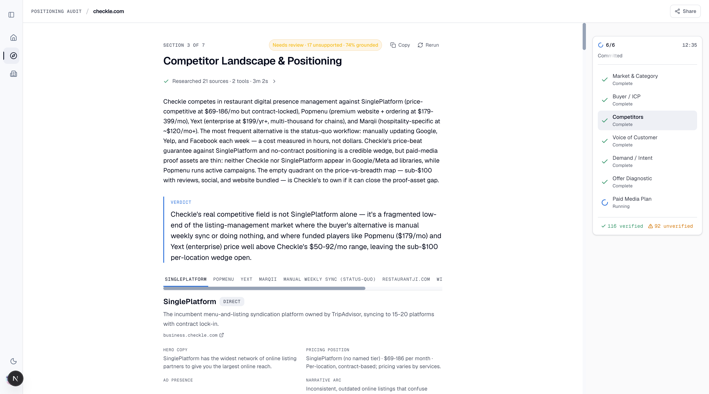

*includes 6m 21s of human brief review and one section rerun. Machine time ≈ 17m.
This was the first live run with all of today's changes active simultaneously: the sonar-deep-research corpus, Firecrawl-primary web search, the six rewritten strategist-grade section skills, the strip-the-lie verifier, unified VoC floors, the ad-probe rescue, the $[Budget] kill, and the tabbed ad UI.
The output is a categorically different product from the 2026-06-09 Airtable run (7/10, ~10 fabrications). The audit correctly identified Checkle as a restaurant-presence platform, scraped its real pricing, found the real competitive set including competitors the operator never typed, discovered which competitors actually run ads (with ad-library links), removed a fabrication before it shipped, and produced a media plan with real spend math from the operator's $1,500 budget.
All six positioning sections fanned out in parallel at 03:17:12Z. Paid media auto-dispatched 1 second after the sixth section committed (the autonomy fan-out fixed on 06-08, holding). Wall clock 03:06:29 → 03:30:23 UTC.
| Check class | Result | Detail |
|---|---|---|
| Run-level (status, rollup 6/6, profile persisted exactly once) | 4/4 PASS | profile_persisted_at set, single event |
| All 8 zones committed | 8/8 PASS | corpus + six positioning + paid media |
| Rollup scoping (counts_toward_rollup) | 7/7 PASS | no capstone mis-flagged |
| Sources present per section | 7/7 PASS | 8–74 sources per section |
| No "idk" advertiser, no fabricated prose on empty wall | PASS | deterministic summary held |
| Paid media: no $[Budget], no [brief: tokens, budget resolved | 3/3 PASS | monthlyBudget = "$1,500 / Month (operator-supplied)" |
| No non-answer token leaks in any body | PASS | clean across all 8 zones |
| Competitor wall: probed per advertiser, no compound names | PASS (after live fix + rerun) | Initial run exposed a real bug: corpus prefilled "SinglePlatform and restaurantji.com" as ONE string; the seed splitter didn't break on "and" → the probe queried a compound garbage name. Fixed + regression-tested (eb3170d7), section rerun → wall now shows two clean advertisers, each probed on Google/Meta/LinkedIn with explicit no-ads evidence. Checkle's brief competitors genuinely run zero ads (the agent's independent probes confirm — Popmenu is the one who advertises, and it's linked in the body). The gate now distinguishes "honest probed-zero" from starvation, plus a permanent compound-name regression check. |
The do-nothing competitor move, executed: "The biggest competitor is not SinglePlatform or Yext — it is the status quo of manually updating menus and hours on each platform."
Named tension with a side and a priced cost: buy high-volume website-builder terms vs. own the low-volume sync frame — cost named as 60–90 days of inflated CAC from DIY shoppers.
Real market data, sourced: Grand View $7.6B/18% CAGR, NRA $1.55T, bottom-up TAM with per-input status table (SOURCED vs EVIDENCE GAP).
A fabrication was caught and removed before shipping:
The "insufficient · 19 unsupported · 49% grounded" badge over-penalizes honest benchmark-labeled estimates — known substring-verifier calibration issue, badge-only by design.
Found the REAL competitive set beyond what anyone typed: SinglePlatform, Popmenu, Yext, Marqii, restaurantji.com, DIY-Wix, and "Manual weekly sync (status-quo)" as a full competitor card with a labor-cost read.
Verified pricing for 5 competitors with sources, estimates honestly labeled ("Marqii ~$120/mo [estimated from Reviewflowz comparison]").
Live ad intelligence from the agent's own ad-library probes: Popmenu runs 8 Google + 7 Meta active creatives (advertiser links + actual hooks: "Get Found by Diners Fast"); Yext runs Google ads but identity flagged "ambiguous"; SinglePlatform runs zero ads → named a paid-media white space ("zero competitive ad noise on 'SinglePlatform alternative' queries").
Real weakness quotes with host-matched sources — G2 quote from g2.com, Reddit from reddit.com, a $1,295/mo Popmenu BBB complaint from bbb.org. No fake provenance anywhere.
Buyer-grade strategy: ATTACK SinglePlatform's contract lock-in / CONCEDE Popmenu's design segment / BLIND SPOT analysis with "why they miss it."

The new tabbed per-competitor layout (A2) — one tab per competitor, zero-ad tabs badged "· NO ADS", no more endless scroll.
The only section to reach the verified tier — pricing-honesty discipline (only scraped, cited pricing) pays off directly in trust scoring.
Fit×intent move executed: "The claimed ICP is 'every restaurant' but every named customer and reviewer sits in the independent owner-operator band (1–5 locations); disqualify chains above 20 locations as a poor paid-media fit."
First attempt died at the 285s job ceiling after burning budget on lookups + 3 repair attempts. Rerun (one click) committed in half the time. See Issues.
Zero verbatim buyer quotes exist for Checkle's B2B product on G2/Capterra/Trustpilot — the section committed the honest gap state with a specific sourcing plan instead of inventing quotes (the 06-09 run's fabrication class). For a small vertical SaaS this is the true state of the world.
The unified floor-6 fix (B1) didn't get exercised here — retrieval found ~0 candidates, not 6–9. The dead-zone fix is pinned by two regression tests instead.
No invented volumes or member counts (the 06-09 fabrication class) — rate-limited SpyFu lookups became explicit evidence-gap lines with [assumed] benchmark labels instead of fake numbers.
SpyFu/SearchAPI rate-limiting starved keyword data across the run ("section budget exhausted after 4 lookups") — quota/env issue, not code. Real volume data would lift demand + market sections materially.
Real spend math from operator input: $1,500/Month (operator-supplied) → $50/Day, 2 testing/optimization phases over 4 months, numeric value fields populated for charts. Zero placeholder tokens (the $[Budget] class is now structurally unrepresentable — schema scrubs it).
Primary KPI chosen intelligently: trial starts (not demo requests) — matching the self-serve motion declared in the brief.
Slot counts pass: 2 phases / 3 audiences / 4 angles / 8 creatives / 3 funnels / 3 KPIs.
| Before (sonar-pro) | This run (sonar-deep-research) | |
|---|---|---|
| Search queries per corpus | 1 pass | 15+ queries, multi-step research |
| Sources captured | ~10–20 | 74 |
| Pricing extraction | "almost never finds pricing" (recurring team pain) | Full real tier table scraped ($50 / $42 / $92→$85 annual) with source link |
| Competitor extraction | frequently blank → "idk" → starved ad probe | Prefilled SinglePlatform + restaurantji.com from Checkle's own comparison page |
| Company identity | — | Correct B2B framing of a consumer-looking site (business.checkle.com) |
| Corpus wall time / est. cost | ~1.5m / ~$0.02 | 4m 22s / ~$0.35 |
Brief prefill quality means the operator confirms instead of researching — 21 of 49 fields arrived pre-filled with confidence levels and source links. Fallback cascade to sonar-pro → sonar retained; fan-out/repair calls stay on sonar-pro. Env-reversible via RESEARCH_DEEP_PROGRAM_MAIN_MODEL.
| Change (commit) | Live evidence in this run | |
|---|---|---|
| Corpus → sonar-deep-research de69c7cc | 74 sources, real pricing, prefilled competitors | PROVEN |
| web_search → Firecrawl primary 4ea83f37 | All section web searches rode Firecrawl /v2/search; zero search-tool gaps in events | PROVEN |
| Tabbed ad UI 3b359e6a | Tab bar live on competitor section, "· NO ADS" badge rendering | PROVEN |
| Token wins ac710eb1 | 5 repair prompts fired this run, each ~42% lighter | PROVEN |
| Skill rewrites ×6 84cfb686…0c8979ef | Do-nothing competitor, named tensions, attack/concede, capture-ceiling math, honest gaps — in every section | PROVEN |
| Strip-the-lie verifier 9f4919da | "500+ switches" fabrication removed pre-commit with visible rationale; zero fake platform attributions in committed bodies | PROVEN |
| VoC floor unification f3a5d79c | Not exercised (retrieval found 0 candidates, honest gap) — pinned by 2 regression tests | TESTED |
| Ad-probe rescue 51f37da2 | Correctly did NOT fire (seeds were non-empty) — pinned by 3 tests incl. prod streaming path | TESTED |
| $[Budget] kill c18d33cb + ad72afa3 | $1,500 → $50/day math; placeholder structurally unrepresentable; gate clean | PROVEN |
| "X and Y" seed split eb3170d7 | Found BY this run, fixed live, regression-tested, section rerun | FIXED LIVE |
Compound competitor seed — corpus prose "X and Y" became one garbage advertiser query. Fixed during this run (eb3170d7) + regression test + section rerun.
Buyer-ICP 285s timeout (1 of 7 sections, recovered by rerun) — the section burned its clock on rate-limited lookups + 3 repair attempts. Mitigations available: section-level time budget awareness before starting a 3rd repair, or raising the local job ceiling. Not a regression from today's changes — known class.
Agentic review "Failed to process successful response" — the 45s post-commit review timed out on 2 sections (badge shows "review unavailable", commit unaffected). Known-open item from 06-09, unchanged today.
SpyFu/SearchAPI rate-limiting — keyword volume data starved across the run; demand sections degraded honestly. Check SearchAPI plan/quota before client runs.
Verifier badge calibration — "insufficient/49% grounded" badges over-punish honest, labeled estimates. Badge-only (no run impact), but for client-facing use the badge copy should distinguish "unsourced claims" from "honest benchmark assumptions". Deferred (B5/A-B test territory).
| Item | Est. cost |
|---|---|
| Corpus: sonar-deep-research main (15 queries, 30+ citations) + 3× sonar-pro fan-out + source expansion | ~$0.45 |
| 7 section runs + 1 rerun + 1 competitor rerun (DeepSeek v4-flash, ~8–20k tok each) | ~$0.70 |
| 114+ live tool calls (Firecrawl search/scrape, SearchAPI ad libraries, reviews, pagespeed) | ~$1.30 |
| Repairs ×5 (now 42% lighter post-A4) | ~$0.15 |
| Total per audit | ~$2.60 |
At agency pricing this audit replaces 4–8 hours of strategist + media-buyer research per client intake. Machine time ~17 min end-to-end.
The 06-09 Airtable run scored 7/10 ship-with-caveats with ~10 real fabrications slipping through. This run produced an audit a SaaSLaunch strategist could hand to a client after a skim-pass: every number traced to a source or labeled as a gap, one fabrication caught and visibly removed, real competitive ad intelligence with library links, and executable media-plan math from real operator inputs.
Honest residual gaps to 9/10: verifier badge calibration (cosmetic but client-visible), keyword-volume data starvation (quota), the 285s timeout class (1-click rerun works but shouldn't be needed), and VoC retrieval for small verticals (needs a paid review-API decision). None of these fabricate; they degrade honestly.